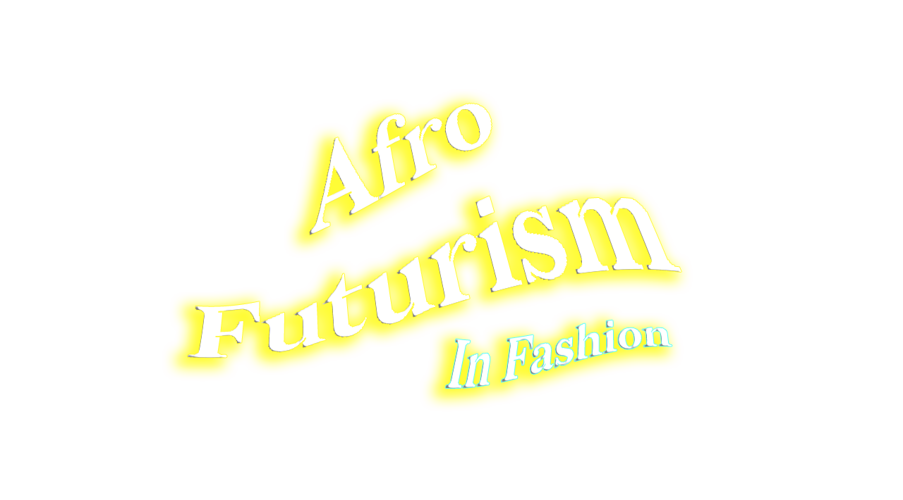
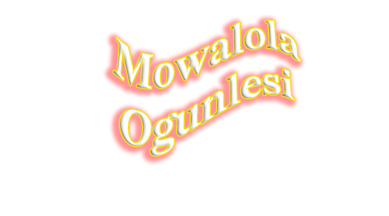
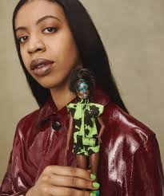
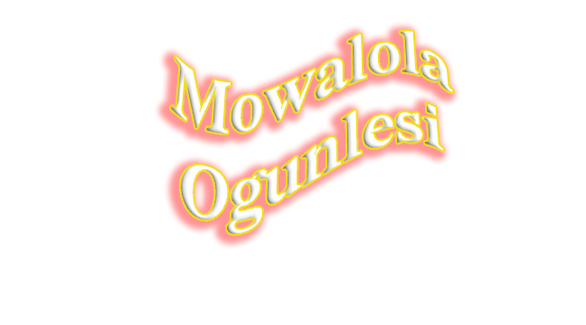
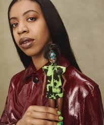
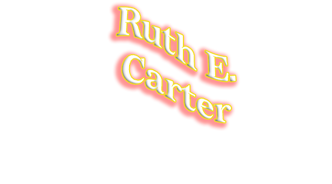
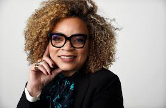
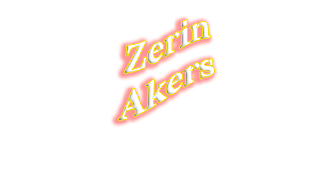
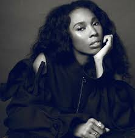

Conference Date Fri Febuary 19
The New School 75th Ave New York, New York
The New School 75th Ave New York, New York
What is AfroFuturism?
Afro-futurism is a cultural aesthetic, philosophy of science, and philosophy of history that explores the developing intersection of African diaspora and culture with an infusion of technology. This conference highlights this re-emerging trend of Afrofuturism to the public through a discussion lead conversation between designers and stylists within the realm of fashion.
 



is a Nigerian-born fashion designer working and living in London. She is known for working with a wide variety of textile such as leather and PVC to produce non-traditional silhouettes inspired by Nigerian and London youth culture.
 is a American costume designer for film and television, with over 40 film to her credit, who has mastered the look of mmultiple periods and genres in envisioning the clothing and overall appearance of a charactter. Her most notable work is for movie Black Panther, which earned her a oscar form the costume design.
 is a American stylist to the star from Maryland. For years she has been working as stylists to Beyonce Knowles, curating the music lengends wardrobe for music videos, instagram post, and on red carpets. Her most notable works is the styling she did for Knowles magnum opus, Black is King.